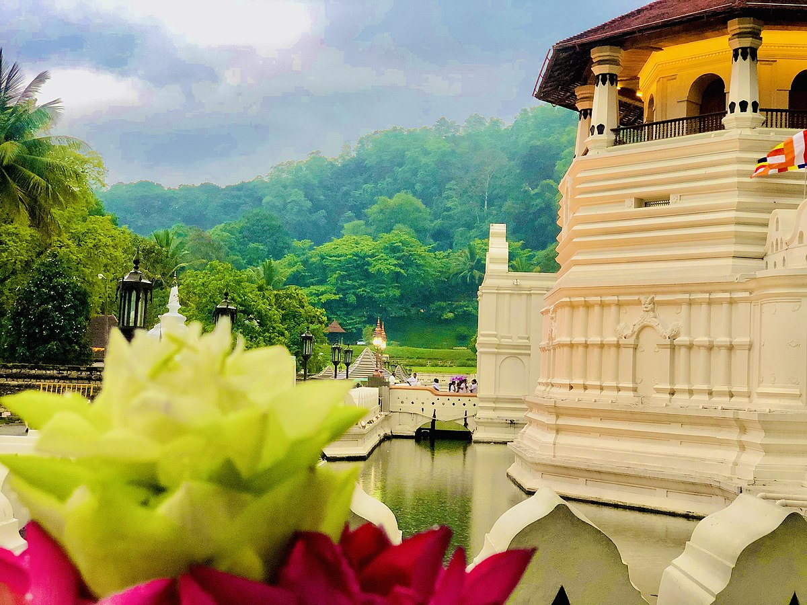
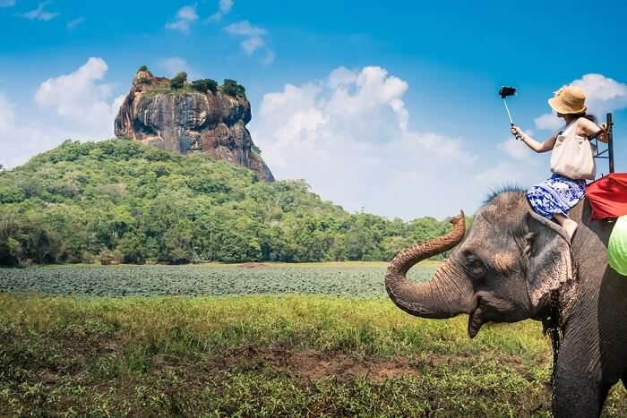

"This rock-hewn shrine,the rock temple is the most spectacular antiquity par excellence to be seen within the Island of Ceylon, and probably not rivaled throughout the continent of Bharat.”
Gal Vihara,Polonnaruwa’s world-famous cluster of rock-cut statues, an inactive,a standing and a splendidly graven reclining Buddha, is so the masterpiece of the art of the traditional Sinhalese civilization
The Gal Vihara seems to be mentioned in Sri Lanka’s ancient chronicle, the Mahavamsa, or additional exactly, it's the second half that is typically named because of the Chulavamsa. The Culavamsa half was written throughout the Polonnaruwa and Dambadeniya periods, most likely below the Kings Parakramabahu I and Parakramabahu II severally. The Gal Viahra’s name given within the chronicle is Uttara avatar, which means “northern monastery”. The name refers to its location within the northern part of the capital Polonnaruwa and simply north of the most monastic complicated that is named Alahena Parivena these days.
The Chronicle attributes a sedent and a reclining Buddha of the Uttara avatar to the nice King Parakramabahu I. (1152-86). It doesn't mention a standing Buddha sculpture, which contributes to some speculation regarding the time of origin and therefore the identification of the standing rock sculpture of the Gal Vihara cluster.
Polonnaruwa’s Gal Vihara marks a vital development in Buddhist history. The rock sculptures area unit is outstanding in several respects. although they still bear traces of Mayanist influences, the reclining Buddha above all may be a new sort of rock-cut Buddhas indicating a shift from the worship of supernatural large Buddhas to the additional human sort of the historical Buddha. consequently, the rock inscriptions of the Gal Vihara area unit vital sources of a principal development within the island’s Buddhist history: They record a monastic reform below the auspices of King Parakramabahu I, the result of that was the unification of the previous 3 monastic traditions (Nikayas), currently in accordance with the Mahavihara tradition, that was strictly Theravadic. From then on, Buddhism has remained to be predominant, or some say sole sort of Buddhism on the island. Parakramabahu’s Buddhist reform, documented at the Gal Vihara in Polonnaruwa, is of significance to Southeast Asian non secular history, too. The pure sort of Theravada Buddhism in Burma, Thailand, and the Kingdom of Cambodia became predominant there, too, particularly below the name “Sinhalese” or “Mahavihara” college.
After the autumn of Polonnaruwa within the middle of the thirteenth century, caused by the marauding troops of the interloper Kalinga Magh, Polonnaruwa fell into decay. although the imposing rock statues have not been unknown to locals, the United Nations agency so created the fashionable name “Gal Vihara” or “Kalugala Viharaya” them, the statues within the jungles were associate degree exciting discovery for British explorers within the nineteenth century. The first colonial officer United Nations agency visited the Gal Vihara statues and reportable concerning them was Lieutenant Fagan in 1820. Major Jonathan Forbes mentioned the rock-cut statues of Polonnaruwa in his renowned travel log “Eleven Years in Ceylon”, 1st printed in 1840 in London. Samuel Baker, United Nations agency soon became renowned as the soul of the stream river saw the Gal Vihara rock statues and created a record of them in one in every one of his 1st books, “Eight Years' Wanderings In Ceylon”, printed in 1855. Photos of the sculptures were taken for the primary time in 1858. within the beginning of the decade, Sir James author Tennant, a remarkable colonial secretary of Ceylon 1845-1850, delineate the Gal Vihara, too. however, the primary scientific account was written by James Ferguson in his “History of Indian and jap Architecture”, published in 1910 in London). The report of British Ceylon’s most renowned Archaeological Commissioner, H.C.P. Bell mentioning his predecessors is cited below, given at the top of this webpage.
"Gal Vihara", additionally Triticum aestivum spelta "Gal Viharaya", means that “Rock Monastery”. it is the name of Sri Lanka’s most celebrated rock-cut Buddha statues. They once belonged to the Uttara Rama, which means “Northern temple”, supported by Polonnaruwa’s nice King Parakramabahu I (1153-86). The Gal Vihara cluster consists of 4 fascinating statues, 3 large rock-cut pictures, and a smaller one in a very partially artificial cave. The Gal Vihara sculptures, every completely different in style, are doubtless the foremost good specimen of Buddha statues hewn out of solid granite in Sri Lanka. All four pictures are holy out of the abrupt japanese slope of one large boulder, which is concerning twenty-seven meters long and ten meters tall. they're still in a very smart state of preservation. so as to safeguard them from air pollution, the resplendent pictures ar protected below a replacement roof, the aesthetic perfection of which could be debatable.
The most celebrated standing Buddha image at Gal Vihara, dated to the Polonnaruva amount, bears the foremost disputable gesture in Buddhist ikon, the gesture of crossing the hands on the chest. As this gesture isn't noted in Indian Buddha pictures, the precise iconographical means of the gesture has engendered differences among students. S.M. Burrows and S. Paranavitana opine that this peculiar gesture may be a gesture of sorrow. Gunapala Senadeera identifies it as a gesture of meditation. However, this gesture, although not shown by Indian Buddha pictures, is understood because of the Svastika gesture in Hindu art. In Hindu art, to pay deference to a supreme god, many statues of attendants perform the cross-handed gesture. It neither suggests unhappiness nor meditation, however devotion. The cross-handed gesture is found largely in South Indian art, samples of sculptures in the Svastika gesture were created throughout many periods of the primary millennium, like Amaravati, Pallava, Western Chalukya, and Chola. One example of Svastika gesture in India is Buddhist, however, neither portraying a Buddha nor one in all his disciples. it's a deity sculpture in cave twelve in Ellora. it's announced ahead of the Garbhagriha containing the Budda image, paying deference to Buddha. However, outside India, there are unit samples of depictions of Buddha showing him paying hommage with the Svatika gesture, to not different beings however to places and symbols of Enlightenment or Nirvana. this is often why professor. Leelananda Prematilleke known the upright image of the Gal Vihara as an illustration of Animisachetiya (also transcribed “Animisacetiya”), or Anamisasatthana (also transcribed “Animisa Satthana”). The latter term refers to a happening within the second week when the Buddha’s enlightenment, whereas “Animasachetiya” is the name of the place of this event. within the second week when attaining Buddhahood Buddha meditated in standing posture, gazing while not blinking to the place of his enlightenment, which is marked by his seat and therefore the Bodhi tree. “Animism” suggests that “unblinking”. This miracle story of the Buddha’s one-week-long unblinking gaze is told in some Prakrit scriptures of the Democratic Socialist Republic of Sri Lanka and geographic area. One such life history of Buddha, composed in the Democratic Socialist Republic of Sri Lanka, is that of the Jinacharita. The scene of the Animisachetiya, showing Buddha gazing towards the Bo-Tree, is pictured within the Kandyan murals of the Dambulla cave temple. during this painting, Buddha ahead of the Bodhi Tree shows an equivalent gesture of devotion as at the Gal Vihara in Polonnaruwa, the hands crossed ahead of the chest. Buddha is paying deference to the Bo-Tree. The Jinacharita reads: “For one week, [the Buddha] stood paying deference to the Bodhi tree and to the throne of conclusion by his unblinking lotus-like eyes. ” The legend of Aminisacetiya is additionally pictured in Kandy-period murals within the cave temple of Hindagala. there's additional supporting proof for this interpretation from a geographic area. In medieval Asian nation (Burma), the cross-handed Svastika gesture was used for illustrations of the Animisachetiya legend within the Powintaung cave from the Ava amount (14th to the sixteenth century). The cross-handed gesture for the Animisachetiya is additionally found within the art of Laos ad Lan-Na (today’s northern Thailand). Animisachetiya illustrations of Buddha also are noted from classical Thai art, associate example may be found in Wat Koh Kaew Suddharam within the Siamese capital Ayyuthiya. Eventually, this gesture became quite a style in Thailand’s Ratanakosin variety of art within the nineteenth century. Their area unit many samples of Animisachetiya illustrations with cross-handed gestures in Bangkok, for instance at Wat Suthat, noted to tourists because of the “Temple of the large Swing”. Most notably, a relief of a Buddha displaying the Svatika gesture ahead of a pipal was found at a block of a Bai Sema (monastic boundary) in Wat Bueng Khum Ngoen. This Buddhist cloister is found within the Yasothon Province within the northeastern region of Siam that is understood as Isan. This a part of Siam wasn't underneath the management of the Dvaravati Kingdom throughout the primary millennium C.E. amazingly, the Bai Sema block is still an associated example of Dvaravati art. And this is often positively sooner than the Polonnaruwa amount. Hence, there's an associate example of an outline of a Buddha within the Svastika gesture of devotion illustrating the Animisachetiya some centuries before the creation of the Standing Buddha of Polonnaruwa’s Gal Vihara. throughout the Polonnaruwa amount, beginning already within the eleventh century, monastic and cultural contacts between the Democratic Socialist Republic of Sri Lanka and the geographic area had been intense. There area unit several samples of influences of Southeast Asian design in Pollonnaruwa. thus it'd return as no surprise if the Gal Vihara cluster is influenced by each Indian Hindu and Southeast Asian Buddhist art. this is often why the interpretation of professor. Prematilleke is incredibly conclusive. If he's correct, the sculpture is the Buddha and not Ananda.
Polonnaruwa was a good town in the country that came into prominence throughout its' temporary amount of two Centuries of Sri Lankan history, being second solely to the traditional town of Anuradhapura in ancient cultural heritage. Polonnaruwa is 216 metric linear units from the national capital and 122 metric linear units from Kurunegala. A most typical thanks to reaching Polonnaruwa is to return to Habarana and so put off on A11 Road [Maradankadawala-Tikkandimadu] and to proceed regarding forty-five metric linear units to return to Polonnaruwa. Polonnaruwa these days could be a showcase of the good ancient Sri Lankan design chemical analysis back to the twelfth century AD, that was complex with several Buddhist monasteries and monuments that were designed by King Parakramabahu I. Later King Nissankamalla (1187-1196 AD ) from the Kalinga kinsfolk additionally had contributed to the event of the many buildings and monuments at Polonnaruwa.
During the Anuradhapura amount around the first to sixth century AD, there are agricultural developments with irrigation work and constructions like Elahera canal, Minneriya tank, Kaudulla tank, Giritale tank, etc. at Polonnaruwa space. The Anuradhapura kingdom's ruling King's army units were additionally stationed at Polonnaruwa. It had not been a serious town at that point. King Aggabodhi IV ( 667-685 AD) was the primary King United Nations agency that lived in Polonnaruwa and dominated the Anuradhapura Kingdom. within the earlier times, this town was referred to as Pulatthinagara, once an illustrious sage, Pulaski which provides a sign of the Hindu influence existed. King Parakramabahu I, was the best King United Nations agency that dominated Polonnaruwa throughout the Polonnaruwa era for thirty-three years from 1153-86 AD and it had been a prosperous time for the whole island nation. it absolutely was a time with various field activities that one will still see even within the contemporary world. He developed town with architects and technicians brought down from Asian country and also the influence of Indian design will be seen from several healthy sites existing these days. Polonnaruwa design, Art, and Sculpture square measure well displayed at Gal Viharaya, Thuparamaya Image House and Lankathilaka Image House, and lots of different sites scattered throughout Polonnaruwa ancient town. Due to invasions from the Cholas of South Asian countries, the Polonnaruwa kingdom was beneath the rule of Cholas for regarding seventy-three years. Polonnaruwa kingdom was abandoned by Sinhala kings within the latter part of the twelfth century.